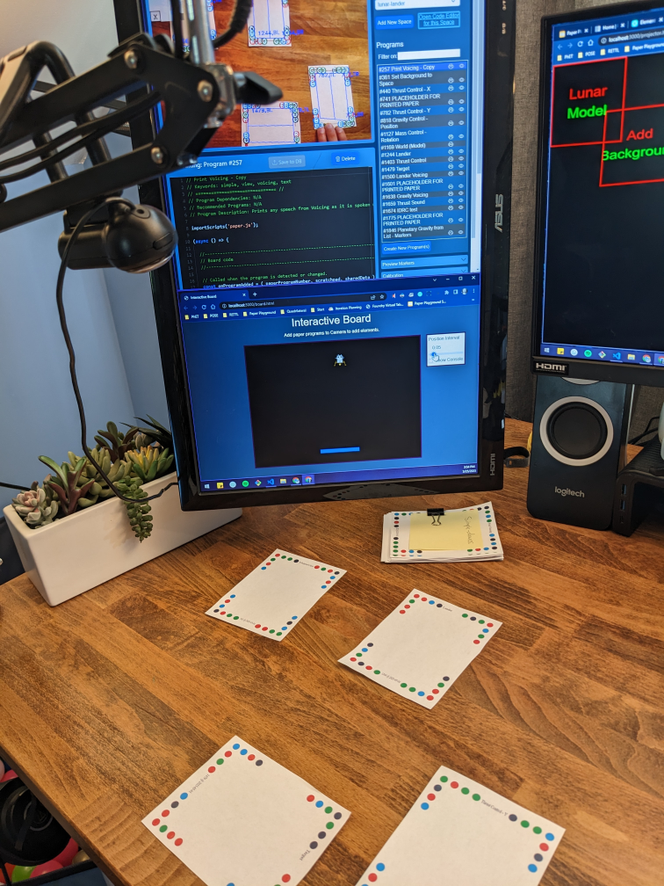

Paper Playground
To run Paper Playground, open ALL of the pages below in new tabs or windows:

The Projector page is required to run paper program code, but can be minimized if not using the projection feature. The Creator page is optional if using the JavaScript Editor in the Camera page.

Papers linked to JavaScript programs, edited and executed in real time.

Flexible arrangements are possible for detecting and running your programs.
This tool was adapted from Paper Programs by JP Posma, which was inspired by the work at Dynamicland.
Find the Paper Playground source code and documentation in the paper-land GitHub repository.